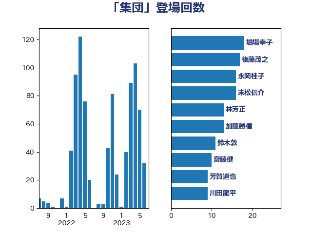

単語「集団」

| 堀場幸子 | 日本維新の会 | 18 回 |
| 後藤茂之 | 自由民主党 | 17 回 |
| 永岡桂子 | 自由民主党 | 16 回 |
| 末松信介 | 自由民主党 | 16 回 |
| 林芳正 | 自由民主党 | 13 回 |
| 加藤勝信 | 自由民主党 | 13 回 |
| 鈴木敦 | 国民民主党 | 11 回 |
| 齋藤健 | 自由民主党 | 10 回 |
| 芳賀道也 | 国民民主党 | 9 回 |
| 川田龍平 | 立憲民主党 | 9 回 |
| 井上哲士 | 日本共産党 | 9 回 |
| 階猛 | 立憲民主党 | 8 回 |
| 谷公一 | 自由民主党 | 7 回 |
| 緒方林太郎 | 無所属 | 7 回 |
| 田村貴昭 | 日本共産党 | 7 回 |
| 松本尚 | 自由民主党 | 7 回 |
| 古賀千景 | 立憲民主党 | 7 回 |
| 伊藤孝恵 | 国民民主党 | 7 回 |
| 福島伸享 | 無所属 | 6 回 |
| 松原仁 | 立憲民主党 | 6 回 |
| 早稲田ゆき | 立憲民主党 | 6 回 |
| 川合孝典 | 国民民主党 | 6 回 |
| 岸田文雄 | 自由民主党 | 6 回 |
| 小里泰弘 | 自由民主党 | 6 回 |
| 倉林明子 | 日本共産党 | 6 回 |
| 阿部知子 | 立憲民主党 | 5 回 |
| 西銘恒三郎 | 自由民主党 | 5 回 |
| 竹谷とし子 | 公明党 | 5 回 |
| 山添拓 | 日本共産党 | 5 回 |
| 宮本徹 | 日本共産党 | 5 回 |
| 宮本岳志 | 日本共産党 | 5 回 |
| 大島敦 | 立憲民主党 | 5 回 |
| こやり隆史 | 自由民主党 | 5 回 |
| 青山大人 | 立憲民主党 | 4 回 |
| 鈴木義弘 | 国民民主党 | 4 回 |
| 赤木正幸 | 日本維新の会 | 4 回 |
| 紙智子 | 日本共産党 | 4 回 |
| 米山隆一 | 立憲民主党 | 4 回 |
| 沢田良 | 日本維新の会 | 4 回 |
| 柚木道義 | 立憲民主党 | 4 回 |
| 打越さく良 | 立憲民主党 | 4 回 |
| 山井和則 | 立憲民主党 | 4 回 |
| 小野泰輔 | 日本維新の会 | 4 回 |
| 古川禎久 | 自由民主党 | 4 回 |
| 高橋光男 | 公明党 | 3 回 |
| 野間健 | 立憲民主党 | 3 回 |
| 足立康史 | 日本維新の会 | 3 回 |
| 赤嶺政賢 | 日本共産党 | 3 回 |
| 西村智奈美 | 立憲民主党 | 3 回 |
| 西村康稔 | 自由民主党 | 3 回 |
| 羽生田俊 | 自由民主党 | 3 回 |
| 竹詰仁 | 国民民主党 | 3 回 |
| 穀田恵二 | 日本共産党 | 3 回 |
| 秋葉賢也 | 自由民主党 | 3 回 |
| 田村智子 | 日本共産党 | 3 回 |
| 牧山ひろえ | 立憲民主党 | 3 回 |
| 榛葉賀津也 | 国民民主党 | 3 回 |
| 梅谷守 | 立憲民主党 | 3 回 |
| 梅村みずほ | 日本維新の会 | 3 回 |
| 岩渕友 | 日本共産党 | 3 回 |
| 山田太郎 | 自由民主党 | 3 回 |
| 山本剛正 | 日本維新の会 | 3 回 |
| 小池晃 | 日本共産党 | 3 回 |
| 寺田稔 | 自由民主党 | 3 回 |
| 大西健介 | 立憲民主党 | 3 回 |
| 仁比聡平 | 日本共産党 | 3 回 |
| 井坂信彦 | 立憲民主党 | 3 回 |
| 高見康裕 | 自由民主党 | 2 回 |
| 高良鉄美 | 無所属 | 2 回 |
| 高橋千鶴子 | 日本共産党 | 2 回 |
| 阿部弘樹 | 日本維新の会 | 2 回 |
| 阿部司 | 日本維新の会 | 2 回 |
| 鈴木貴子 | 自由民主党 | 2 回 |
| 鈴木庸介 | 立憲民主党 | 2 回 |
| 野田国義 | 立憲民主党 | 2 回 |
| 野村哲郎 | 自由民主党 | 2 回 |
| 足立敏之 | 自由民主党 | 2 回 |
| 谷合正明 | 公明党 | 2 回 |
| 西村明宏 | 自由民主党 | 2 回 |
| 萩生田光一 | 自由民主党 | 2 回 |
| 若松謙維 | 公明党 | 2 回 |
| 舩後靖彦 | れいわ新選組 | 2 回 |
| 美延映夫 | 日本維新の会 | 2 回 |
| 笠井亮 | 日本共産党 | 2 回 |
| 稲田朋美 | 自由民主党 | 2 回 |
| 石破茂 | 自由民主党 | 2 回 |
| 田中英之 | 自由民主党 | 2 回 |
| 田中健 | 国民民主党 | 2 回 |
| 片山大介 | 日本維新の会 | 2 回 |
| 熊谷裕人 | 立憲民主党 | 2 回 |
| 漆間譲司 | 日本維新の会 | 2 回 |
| 渡辺博道 | 自由民主党 | 2 回 |
| 浅野哲 | 国民民主党 | 2 回 |
| 浅田均 | 日本維新の会 | 2 回 |
| 森山浩行 | 立憲民主党 | 2 回 |
| 東徹 | 日本維新の会 | 2 回 |
| 日下正喜 | 公明党 | 2 回 |
| 徳永久志 | 無所属 | 2 回 |
| 岬麻紀 | 日本維新の会 | 2 回 |
| 山本太郎 | れいわ新選組 | 2 回 |
| 山下芳生 | 日本共産党 | 2 回 |
| 尾崎正直 | 自由民主党 | 2 回 |
| 小西洋之 | 立憲民主党 | 2 回 |
| 小川淳也 | 立憲民主党 | 2 回 |
| 天畠大輔 | れいわ新選組 | 2 回 |
| 大串博志 | 立憲民主党 | 2 回 |
| 塩田博昭 | 公明党 | 2 回 |
| 堤かなめ | 立憲民主党 | 2 回 |
| 堀内詔子 | 自由民主党 | 2 回 |
| 嘉田由紀子 | 無所属 | 2 回 |
| 北神圭朗 | 無所属 | 2 回 |
| 勝部賢志 | 立憲民主党 | 2 回 |
| 伊藤孝江 | 公明党 | 2 回 |
| 伊東信久 | 日本維新の会 | 2 回 |
| 上杉謙太郎 | 自由民主党 | 2 回 |
| 齊藤健一郎 | 無所属 | 1 回 |
| 高階恵美子 | 自由民主党 | 1 回 |
| 高橋はるみ | 自由民主党 | 1 回 |
| 高木かおり | 日本維新の会 | 1 回 |
| 高市早苗 | 自由民主党 | 1 回 |
| 馬場雄基 | 立憲民主党 | 1 回 |
| 馬場伸幸 | 日本維新の会 | 1 回 |
| 音喜多駿 | 日本維新の会 | 1 回 |
| 青柳仁士 | 日本維新の会 | 1 回 |
| 青木愛 | 立憲民主党 | 1 回 |
| 青山繁晴 | 自由民主党 | 1 回 |
| 長谷川淳二 | 自由民主党 | 1 回 |
| 金村龍那 | 日本維新の会 | 1 回 |
| 金子恵美 | 立憲民主党 | 1 回 |
| 金子恭之 | 自由民主党 | 1 回 |
| 野田聖子 | 自由民主党 | 1 回 |
| 野中厚 | 自由民主党 | 1 回 |
| 輿水恵一 | 公明党 | 1 回 |
| 赤澤亮正 | 自由民主党 | 1 回 |
| 赤池誠章 | 自由民主党 | 1 回 |
| 藤巻健太 | 日本維新の会 | 1 回 |
| 蓮舫 | 立憲民主党 | 1 回 |
| 菊田真紀子 | 立憲民主党 | 1 回 |
| 荒井優 | 立憲民主党 | 1 回 |
| 舟山康江 | 国民民主党 | 1 回 |
| 羽田次郎 | 立憲民主党 | 1 回 |
| 篠原豪 | 立憲民主党 | 1 回 |
| 笠浩史 | 無所属 | 1 回 |
| 竹内真二 | 公明党 | 1 回 |
| 穂坂泰 | 自由民主党 | 1 回 |
| 福重隆浩 | 公明党 | 1 回 |
| 福島みずほ | 社会民主党 | 1 回 |
| 神谷裕 | 立憲民主党 | 1 回 |
| 神谷宗幣 | 参政党 | 1 回 |
| 石川大我 | 立憲民主党 | 1 回 |
| 石井苗子 | 日本維新の会 | 1 回 |
| 矢倉克夫 | 公明党 | 1 回 |
| 白石洋一 | 立憲民主党 | 1 回 |
| 田村憲久 | 自由民主党 | 1 回 |
| 生稲晃子 | 自由民主党 | 1 回 |
| 玄葉光一郎 | 立憲民主党 | 1 回 |
| 渡辺猛之 | 自由民主党 | 1 回 |
| 渡辺創 | 立憲民主党 | 1 回 |
| 清水真人 | 自由民主党 | 1 回 |
| 泉田裕彦 | 自由民主党 | 1 回 |
| 河野太郎 | 自由民主党 | 1 回 |
| 江田憲司 | 立憲民主党 | 1 回 |
| 水岡俊一 | 立憲民主党 | 1 回 |
| 櫻井周 | 立憲民主党 | 1 回 |
| 横沢高徳 | 立憲民主党 | 1 回 |
| 森屋隆 | 立憲民主党 | 1 回 |
| 柴田巧 | 日本維新の会 | 1 回 |
| 柳ヶ瀬裕文 | 日本維新の会 | 1 回 |
| 枝野幸男 | 立憲民主党 | 1 回 |
| 松野博一 | 自由民主党 | 1 回 |
| 松村祥史 | 自由民主党 | 1 回 |
| 松川るい | 自由民主党 | 1 回 |
| 杉田水脈 | 自由民主党 | 1 回 |
| 本田顕子 | 自由民主党 | 1 回 |
| 末松義規 | 立憲民主党 | 1 回 |
| 有村治子 | 自由民主党 | 1 回 |
| 星北斗 | 自由民主党 | 1 回 |
| 新藤義孝 | 自由民主党 | 1 回 |
| 新妻秀規 | 公明党 | 1 回 |
| 志位和夫 | 日本共産党 | 1 回 |
| 広瀬めぐみ | 自由民主党 | 1 回 |
| 平沼正二郎 | 自由民主党 | 1 回 |
| 平口洋 | 自由民主党 | 1 回 |
| 川崎ひでと | 自由民主党 | 1 回 |
| 山際大志郎 | 自由民主党 | 1 回 |
| 山谷えり子 | 自由民主党 | 1 回 |
| 山田賢司 | 自由民主党 | 1 回 |
| 山田勝彦 | 立憲民主党 | 1 回 |
| 山本香苗 | 公明党 | 1 回 |
| 山本左近 | 自由民主党 | 1 回 |
| 山崎誠 | 立憲民主党 | 1 回 |
| 山岸一生 | 立憲民主党 | 1 回 |
| 山口壯 | 自由民主党 | 1 回 |
| 小山展弘 | 立憲民主党 | 1 回 |
| 小倉將信 | 自由民主党 | 1 回 |
| 寺田静 | 無所属 | 1 回 |
| 宮崎政久 | 自由民主党 | 1 回 |
| 宮崎勝 | 公明党 | 1 回 |
| 大石あきこ | れいわ新選組 | 1 回 |
| 大塚耕平 | 国民民主党 | 1 回 |
| 塩川鉄也 | 日本共産党 | 1 回 |
| 土田慎 | 自由民主党 | 1 回 |
| 國重徹 | 公明党 | 1 回 |
| 国光あやの | 自由民主党 | 1 回 |
| 吉良よし子 | 日本共産党 | 1 回 |
| 吉田統彦 | 立憲民主党 | 1 回 |
| 吉田宣弘 | 公明党 | 1 回 |
| 吉田とも代 | 日本維新の会 | 1 回 |
| 古屋範子 | 公明党 | 1 回 |
| 加藤竜祥 | 自由民主党 | 1 回 |
| 加藤明良 | 自由民主党 | 1 回 |
| 冨樫博之 | 自由民主党 | 1 回 |
| 住吉寛紀 | 日本維新の会 | 1 回 |
| 仁木博文 | 無所属 | 1 回 |
| 中谷真一 | 自由民主党 | 1 回 |
| 中川郁子 | 自由民主党 | 1 回 |
| 中川貴元 | 自由民主党 | 1 回 |
| 三浦信祐 | 公明党 | 1 回 |
| 三ッ林裕巳 | 自由民主党 | 1 回 |
| 一谷勇一郎 | 日本維新の会 | 1 回 |
| ながえ孝子 | 無所属 | 1 回 |